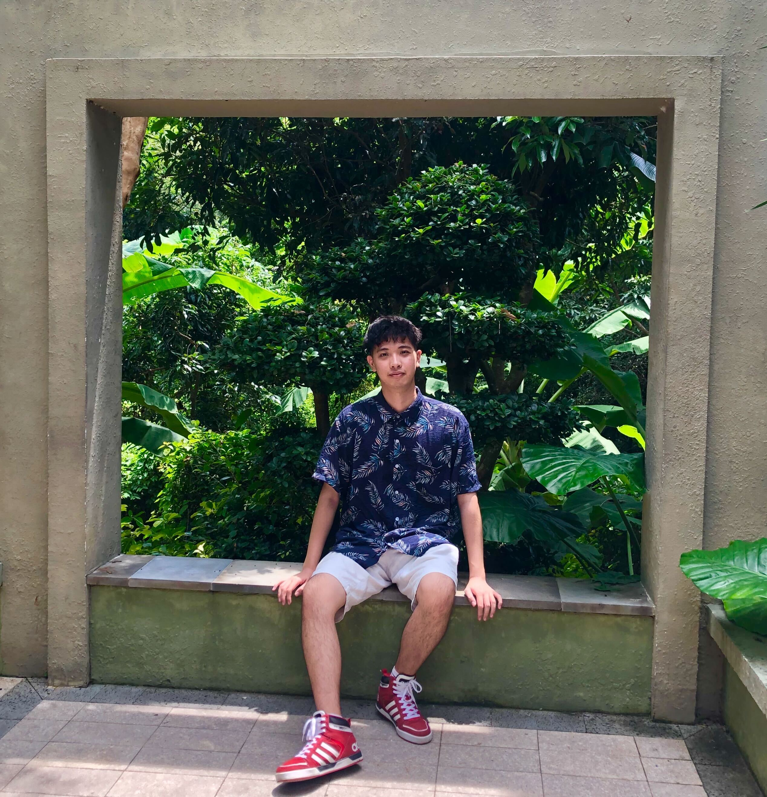

Yunhengw Wu (呉 運恒)Ph.D. Student
Department of Intelligent Systems,
|
 |
About Me
I am a first-year Ph.D. student in the Department of Intelligent Systems, Nagoya University, supervised by Prof. Kensaku Mori. Before that, I received the B. Eng degree from School of Computer Science and Engineering in Northeastern University of China in 2019.
I focus on biomedical image processing.
If you would like to chat with me about any interesting topics or questions on computer vision related, please don't hesitate to contact with me via email!
News
Selected Publications
-
Thrombosis region extraction and quantitative analysis in confocal laser scanning microscopic image sequence in in-vivo imaging [Paper]
Yunheng Wu, Masahiro Oda, Yuichiro Hayashi, Shuntaro Kawamura, Takanori Takebe, Kensaku Mori.
In Medical Imaging 2023: Biomedical Applications in Molecular, Structural, and Functional Imaging (Vol. 12468, pp. 71-77). SPIE.
-
Blood Vessel Segmentation From Low-Contrast and Wide-Field Optical Microscopic Images of Cranial Window by Attention-Gate-Based Network [Paper]
Yunheng Wu, Masahiro Oda, Yuichiro Hayashi, Takanori Takebe, Shogo Nagata, Cheng Wang, Kensaku Mori.
Proceedings of the CVPR, 2022.
-
A 3D Multi-scale Virtual Adversarial Network for False Positive Reduction in Pulmonary Nodule Detection [Paper]
Yunheng Wu, Yuxuan Pang, Peng Cao.
Proceedings of the 2019 3rd ICIAI, 2019
Education
- Department of Intelligent Systems, Graduate School of Informatics, Nagoya University, Nagoya, Japan, Apr. 2023 - Now
Ph.D student
Advisor: Prof. Kensaku Mori
- Department of Intelligent Systems, Graduate School of Informatics, Nagoya University, Nagoya, Japan, Apr. 2021 - Mar. 2023
Master student (Degree: Master of Informatics)
Advisor: Prof. Kensaku Mori
- School of Informatics, Nagoya University, Nagoya, Japan, Apr. 2020 - Mar. 2021
Research Student (Non-degree Course)
Advisor: Prof. Kensaku Mori
- School of Computer Science and Engineering, Northeastern University, Shenyang, China, Oct. 2015 - Jun. 2019
Undergraduate Student (Degree: Bachelor of Engineering)
- Department of Electronic Engineering, Kyung Hee University, Shenyang, China, Aug. 2017 - Jan. 2018
Exchange Student (Non-degree Course)
Advisor: Prof. Peng CAO
Experience
- Mori Laboratory, Graduate School of Informatics, Nagoya University, Nagoya, Japan, Apr. 2021 - Mar. 2023
Research Assistant (Part-time)
Advisor: Prof. Kensaku Mori
- Institute of Signal and Information Processing, Northeastern University, Shenyang, China, Jan. 2018 - Jul. 2018
Research Student
Advisor: Prof. Feng Luan
- Key Laboratory of Medical Imaging Computation, Northeastern University, Shenyang, China, Jan. 2018 - Jun. 2019
Research Student
Advisor: Prof. Peng CAO
Project
- JST Moonshot Project Goal 3 Co-evolution of Human and AI-Robots to Expand Science Frontiers, Apr. 2021 - Now
Student Member
PM: Prof. Kanako Harada
Advisor PI: Prof. Kensaku Mori
Collaborative PI: Prof. Takanori Takebe
- National Undergraduate Training Program for Innovation and Entrepreneurship, Jan. 2018 - Jun. 2019
Project Leader
Fellowship
- Convolution of Informatics and Biomedical Sciences on Glocal Alliances, Apr. 2021 - Now
The third-generation students of CIBoG (Graduate School of Informatics and Graduate School of Medicine)
- Nagoya University interdisciplinary Frontier Fellowship, Apr. 2023 - Now
Information/AI Field
Selected Awards
Toka Education, Culture and Communication Foundation Scholarship, 2022-2023
JEES Softbank AI Talent Development Scholarship, 2021-2022
Northeastern University Outstanding Student Scholarship, 2018-2019
Northeastern University Personal Excellent Academic Professionals, 2017-2018
Northeastern University Outstanding Student Scholarship, 2017-2018

- Convolution of Informatics and Biomedical Sciences on Glocal Alliances, Apr. 2021 - Now